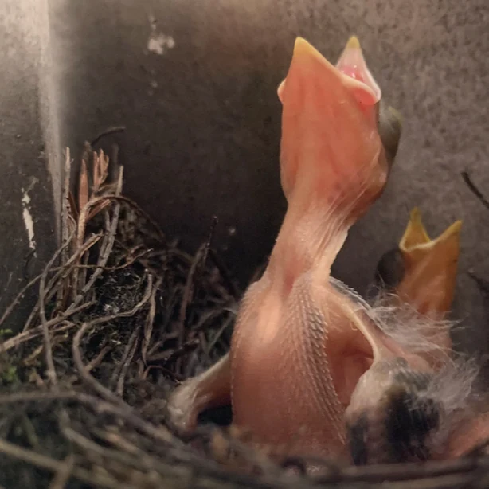
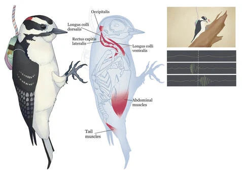
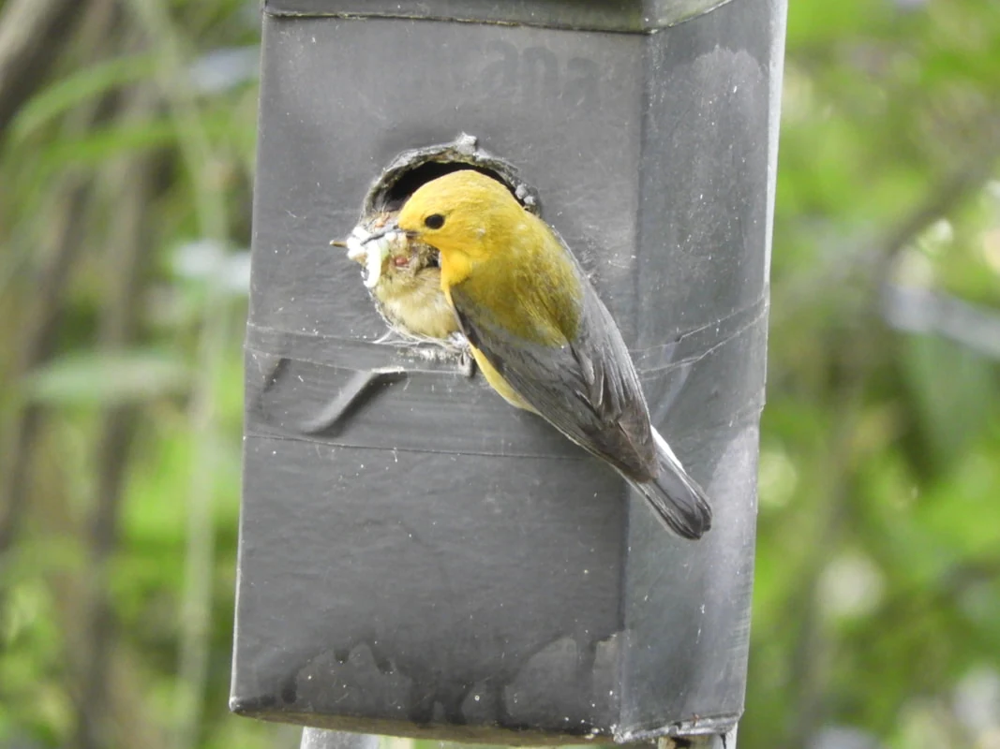

Research
We study how animals produce signals, how physiology shapes their performance, and how those signals change across species.
Brood parasitism
Brood Parasitism and the Elaboration of Selfish Signaling Traits
Brown-headed cowbirds lay their eggs in other birds’ nests. After hatching, cowbird nestlings must compete for food alongside their host’s own chicks. We study how they sustain begging and how the nest environment affects development.
Our work pairs observations of begging with muscle physiology in cowbirds and their prothonotary warbler hosts. It asks how fatigue resistance helps sustain repeated displays and how the number of nestmates affects the conditions in which chicks develop.
Read the study on muscle fatigue resistance
Motor sequence evolution
How movements become signals
Woodpecker drumming
Woodpeckers strike resonant surfaces in rapid sequences to communicate. We combine acoustic recordings and muscle physiology to ask how fast a bird can drum, how it controls the timing of a sequence, and how drum rhythms evolve.
Read the study on neck muscles and drum speedKangaroo rat footdrumming
We are expanding our study of motor sequences to the footdrumming of Heermann’s kangaroo rats. By comparing footdrumming with other hindlimb movements, we ask how the muscles and motor circuits used in locomotion may also support rhythmic signaling.

Comparative bioacoustics
BegBase
BegBase is a growing comparative database of nestling begging calls. We use audio from different species to ask how begging evolves with nest ecology, development, and competition for food.
Students can contribute by identifying begging calls in recordings, annotating them, and helping check the quality of the data.
Get involved with BegBase